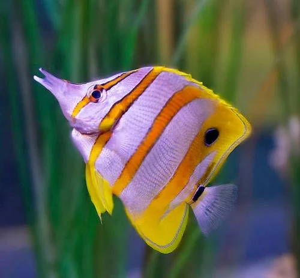

FIGHTER
The Siamese fighting fish, commonly known as the betta, is a freshwater fish native to Southeast Asia, namely Cambodia, Laos, Myanmar, Malaysia, Indonesia, Thailand, and Vietnam.
read more

GOLDEN FISH
The goldfish is a freshwater fish in the family Cyprinidae of order Cypriniformes. It is commonly kept as a pet in indoor aquariums, and is one of the most popular aquarium fish. Goldfish released into the wild have become an invasive pest in parts of North America.
read more

BUTTERFLY FISH
The butterflyfish are a group of conspicuous tropical marine fish of the family Chaetodontidae; the bannerfish and coralfish are also included in this group. The approximately 129 species in 12 genera are found mostly on the reefs of the Atlantic, Indian, and Pacific Oceans
read more

GUPPY
The guppy, also known as millionfish or the rainbow fish, is one of the world's most widely distributed tropical fish and one of the most popular freshwater aquarium fish species. It is a member of the family Poeciliidae and, like almost all American members of the family, is live-bearing
read more
Header
Zebra ,Harlequin rasbora,Three spot gourami,
Oscar Animal,Bala shark ,Asian arowana,
Convict cichlid,Diamond tetra,Cichla ocellaris,
Texas cichlid,Red devil cichlid,Jaguar cichlid,
Threespot dascyllus,Tinfoil barb,Giant gourami,
Threadfin acara,Midas cichlid,Spotted gar>
aquarium fish fishers are a small and
somewhat marginalized group,the fishery
is not considered a cultural right that
needs to be protected, and revenues and
livelihoods are restricted to a small number
of fishers.